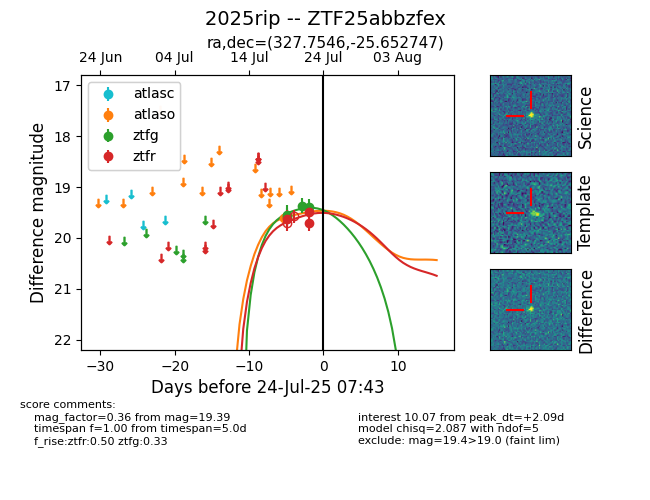

Target ZTF25abbzfex at 2025-07-23 11:52, see:
FINK: fink-portal.org/ZTF25abbzfex
Lasair: lasair-ztf.lsst.ac.uk/objects/ZTF25abbzfex
ALeRCE: alerce.online/object/ZTF25abbzfex
TNS: wis-tns.org/object/2025rip
YSE: ziggy.ucolick.org/yse/transient_detail/2025rip
alt names
ZTF25abbzfex (ztf,fink)
2025rip (tns,yse)
coordinates:
equatorial (ra, dec) = (327.7546,-25.65275)
galactic (l, b) = (24.4549,-49.78709)
photometry
last ztfg=19.39, ztfr=19.71
4 ztfg, 3 ztfr detections
